In the sum CAR + CAT = RARE each letter represents a different digit from 0 to 9. What is the value of the word RARE?
Children are sitting in a circle, and a teacher walks around the circle, dealing cards. The teacher gives a Jack to every second child, and a Queen to every third child.
After going around four times, the sixth child from where the teacher started has two Jacks and two Queens.
What is the smallest number of children could there be?
One gallon of honey provides fuel for one bee to fly about seven million miles.
Roughly how many bees could fly one thousand miles if they had ten gallons of honey?
From how many vertices (points) is it possible to draw this figure by an uninterrupted movement of the pen, going through each line exactly once?
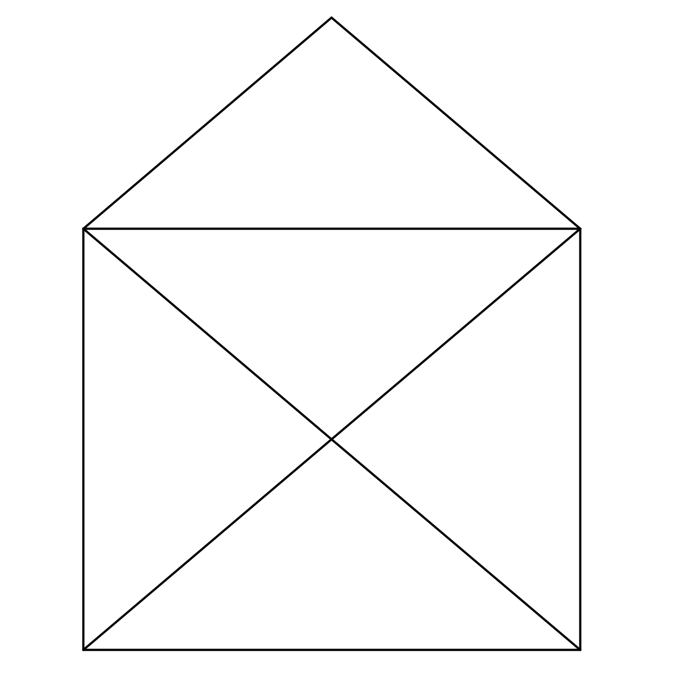
Pegs numbered 1 to 50 are placed in order in a line, with number 1 on the left.
They are then knocked over, one at a time, following these two rules:
What is the number of the last peg to be knocked down?
A small number of cards has been lost from a complete pack of 52. If I deal among four people, three cards remain. If I deal among three people, two remain and if I deal among five people, two cards remain. How many cards are there?
The average (mean) of 16 different positive integers is 16. What is the greatest possible value that any of these integers could have?
The 1st monkey presses every multiple of 1.
The 2nd monkey presses every multiple of 2.
The 3rd monkey presses every multiple of 3.
Etc., until the 1000th monkey. After all the monkeys have finished pressing switches, how many lights in total will be on?
Below is a single sheet from a newspaper. Given that each sheet has four pages, how many sheets are there altogether?
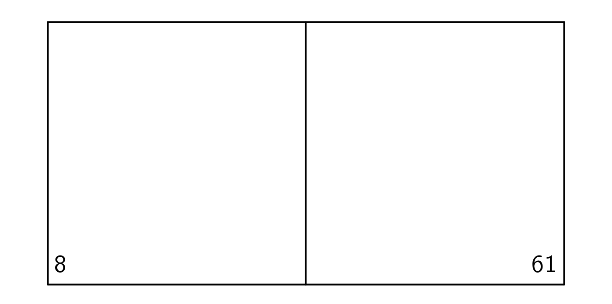
The pattern 123451234512345... is continued to form a 2000 digit number.
What is the sum of all 2000 digits?
At a restaurant each table has 3 legs, each chair has 4 legs and all the customers and the three members of staff have 2 legs each. There are four chairs at each table. Three quarters of the chairs are occupied by customers and there are 206 legs altogether in the restaurant. How many chairs does the restaurant have?
Pegs numbered 1 to 52 are placed in a circle. Starting with number 2, alternate pegs are knocked down until only one is left.
What is the number of the last peg to be knocked down?
Here is one correct example:
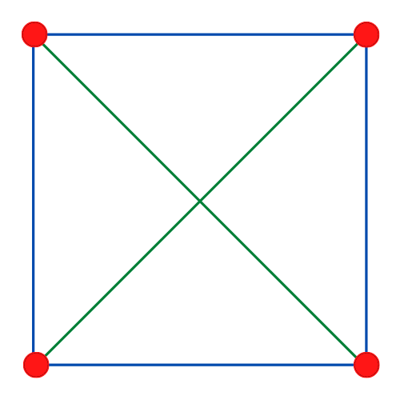
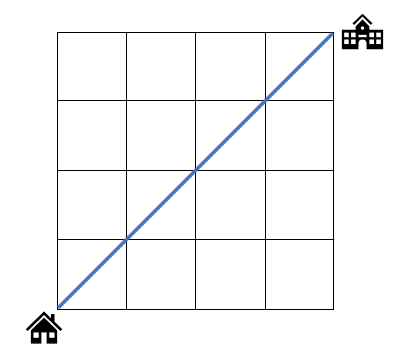
How many different ways can you arrange teachers and students in a row of 5 chairs such that no 2 teachers are sat next to each other?
How many tricolour flags are possible with 5 available colours such that two adjacent stripes must NOT be the same colour.
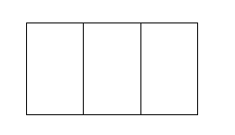
How many squares are there in the 10 by 10 square grid below?
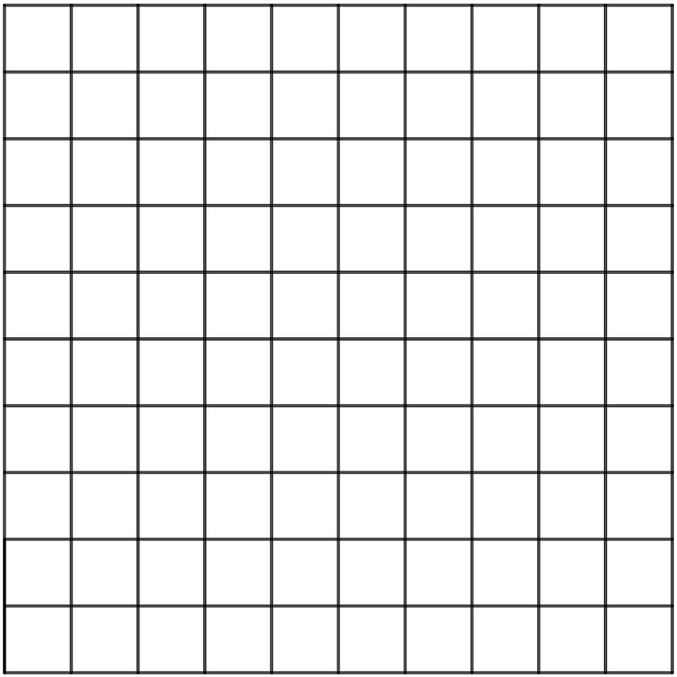
There are 5 different paths you could take to get from home to school. In a week (from Monday to Friday) you would like to try a different path every day. In how many ways can you do this?
Start from home (H) and go to school (S). You can walk along the 2 by 5 grid by making steps only towards east or north. In how many ways can you reach your school?
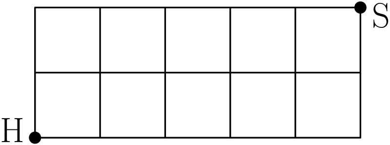
You have a pair of red socks, a pair of blue socks, a pair of yellow socks, and a pair of green socks. In how many ways can you mix them up and form new pairs so that all the new pairs are mismatched, and none of the new (mismatched) pairs is the same as another new (mismatched) pair?
What is the biggest number of pieces of cake you can obtain with 5 cuts? Cuts can be done along any long straight line.
In the final of a football cup the score was 5 - 2. In how many possible orders could the goals in the game be scored?
At your friend's birthday there are 8 children. Each child shakes hands with all the others in the party. How many handshakes happened in total?
If 8 people are seated around a circular table, in how many ways can all of them be simultaneously shaking hands with another person at the table in such a way that none of the arms cross each other? (They have very long arms).
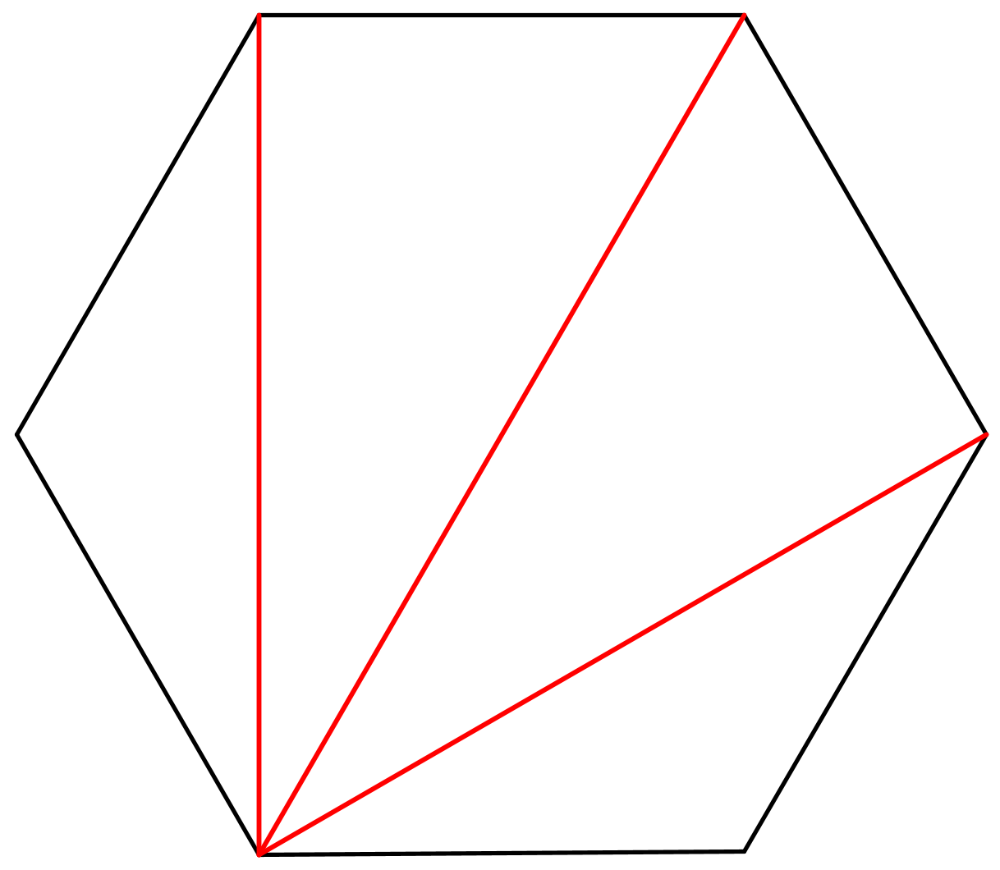
The integer 12 is the first abundant number. Its proper divisors (factors not including 12 itself) are 1, 2, 3, 4, and 6 which add up to 16 which is more than 12.
When you look at numbers found in real-world data sets, for most sets of numbers the first digit is more often a 1 than any other digit. 2 is a more common first digit than 3, and so on up to 9. In fact, the first digits often follow the same pattern (distribution).
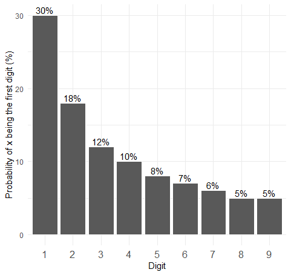
In a room of 23 people the probability that two people have the same birthday is more than 50%.
Think of a positive integer (whole number). If it is even, halve it. It if is odd, multiply it by 3 and add 1. Repeat the process with your new number and keep going. Stop if you get to the number 1. Nobody knows if a number exists that doesn't end up at 1.
If you could fold a piece of paper on itself only 42 times, it would reach the Moon!
It takes at most four colours to colour every map such that no two adjacent regions are the same colour.
Choose a four digit number where the digits are not all the same.
Rearrange the digits to get the largest and smallest numbers these digits can make.
Subtract the smallest number from the largest to get a new number, and carry on repeating the operation for each new number. You will always end up at the same number.
Take a positive integer (whole number). Reverse the digits to get a new number. Add the two numbers together. Repeat this process until you get a palindrome (a number that reads the same forwards and backwards).
Can you find a starting number that doesn't end up at a palindrome? Nobody knows if this is possible.
2201³ = 10662526601 is the only known palindromic cube whose root is not palindromic (a palindrome is a number that reads the same backwards as forwards).
73939133 is the largest prime number that, if you keep removing digits from the right, will always leave a prime number.
1729 is the smallest number expressible as a sum of two cube numbers in two different ways
If you shuffle a deck of cards properly, it's more than likely that the exact order of the cards you get has never been seen before in the whole history of the universe.
The first six triangular numbers are 1, 3, 6, 10, and 15
The first six square numbers are 1, 4, 9, 16, and 25
Any square number bigger than 1 is the sum of two consecutive triangular numbers.
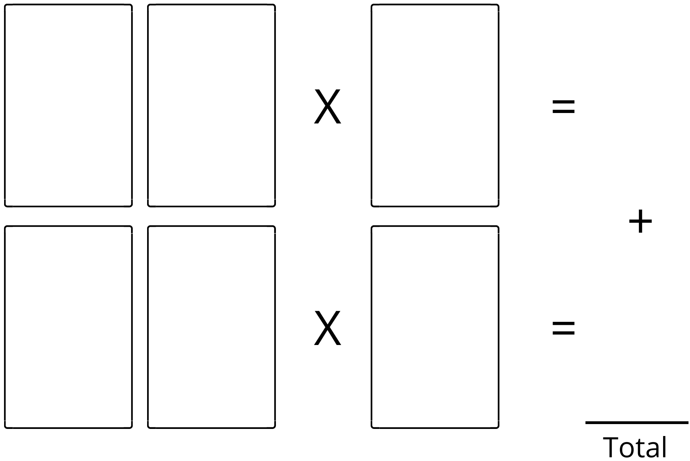
Any number of players can play. Deal 6 cards face up on a table. Everyone has 1 minute to decide how to set them out in the layout above to make the biggest total of the two multiplications. A counts as 1. The player with the highest score wins.
This is a game for two players (or a group split into two teams). Take the A and 2 to 9 cards of any suit and place them face up in order. A = 1 in this game. Take it in turns to choose one of the cards and place it in front of you. To win, be the first player to hold exactly three cards that add up to 15. You can have more than three cards, but you only win if three of them make 15.
Start by drawing a square grid of 15 by 15 lines. Two players take it in turns to place a counter on any point where lines cross. The player who gets five of their counters in a straight line wins. The line can be vertical, horizontal or diagonal.
Take the 16 J, Q, K and A cards from a pack. Try to put them in a 4 by 4 square so that each rank (J, Q, K, A) and each suit (Clubs, Diamonds, Hearts, Spades) appears only once in each row and column.
|
| | |
| | | | |
Arrange 9 sticks in 3 rows as shown. Two players take it in turn to remove one or more sticks from a single row. The loser is the person to take the last stick. Can you find a winning strategy?
This is a one player game of patience. Lay out a grid of 8 cards in 2 rows of 4 cards, face up and hold the remaining cards. If you find two cards in the grid that sum to 11 you can put new cards from your hand on top of them. If you find the 3 picture cards (J, Q, and K) you can also put 3 new cards on top. The object of the game is to put down all the cards in your hand.
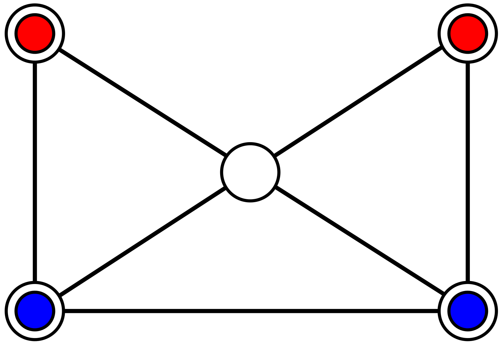
Draw the grid shown with five points and seven connecting lines. Two players place two counters of the same colour/design in the grid as shown.Decide who will go first. The first player moves one of their pieces to the centre point. Then players take turns moving a counter along a line to an empty point until one player cannot move a counter and loses.
Draw six points in a hexagon. Players take turns to draw a straight line between any two points. Each player should use a different colour. Try to avoid making a triangle: the player that completes a triangle with their colour first loses the game.
This is a game for two or three players. Shuffle the deck and place it face down. The first player turns over the top card and continues turning over cards, adding together the value of each card, until they decide to stop and record their score. J = 11 and Q = 12.
If an A or a K is turned over, no points are scored at all and the turn is finished.
Players take turns until someone reaches 100 or more - this player is the winner.
Remove the 10, J, Q, K, and Joker cards from the deck. Shuffle the rest and deal four cards face up on the table so that every player can see them. Each player attempts to make the number 24 silently using all four numbers (A count as 1), and as many operations +, −, × and ÷ and brackets () as needed. The first person to give an answer with an explanation wins and keeps the 4 cards. Keep playing until there are no cards left.
Players take it in turn to count up, starting from 1 and saying 1, 2, or 3 numbers at a time. Continue counting from where the other player stops. The player who says 21 loses.
Remove the 10, J, Q, K, and Jokers. Deal each player 9 cards. Players secretly arrange their cards to make a 4-digit number, a 3-digit number and a 2-digit number. All at once, the players show their three numbers.
The biggest 2-digit number gets 2 points, biggest 3-digit gets 3 points, biggest 4-digit gets 4 points. If there is a tie then the points are split between the players.
This is a two player game. Player 1 secretly chooses four cards and puts them in a row face down. Player 2 has seven attempts to guess the suits (clubs, diamonds, hearts, spades) of these cards, in order. Player 2 guesses by laying four cards in a row face up. Player 1 looks at the suits, and tells them how many suits they guessed in the correct position (x), and how many other suits they have guessed correctly but in the wrong position (o). Player 2 uses this information to make a better guess next time.